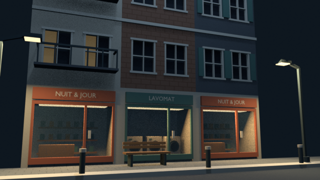
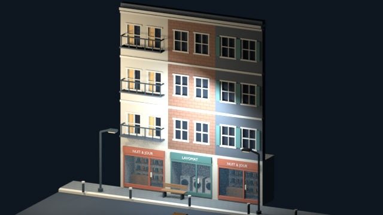
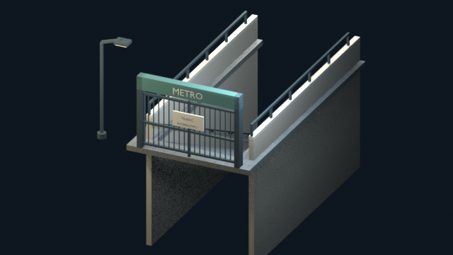
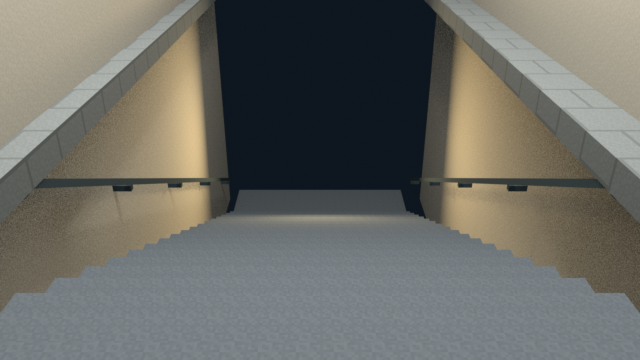
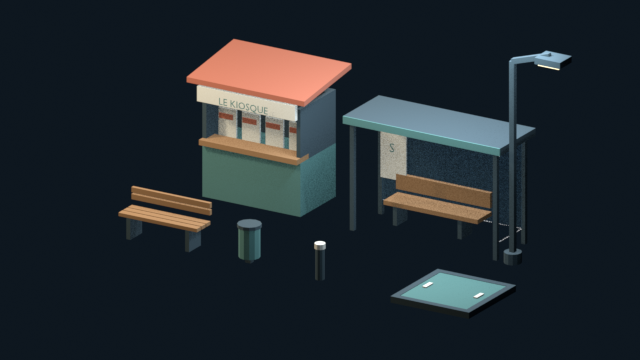
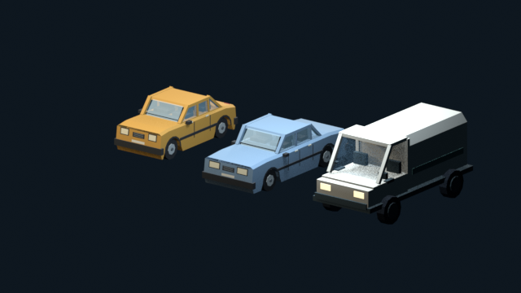
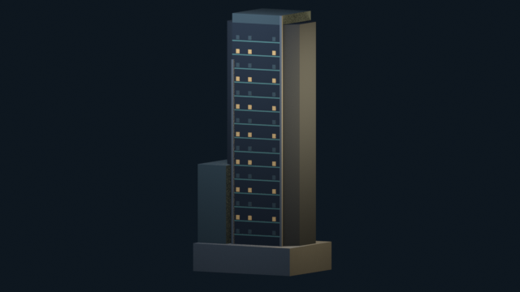
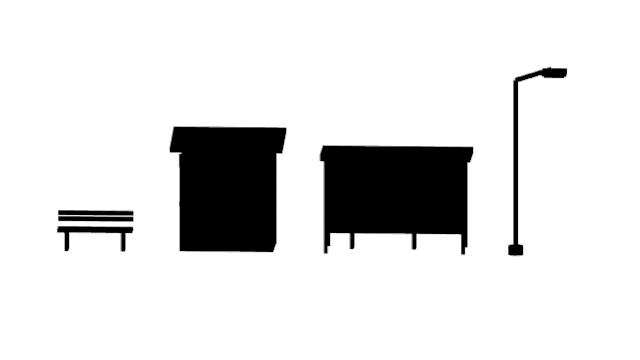

PROJET CASSANDRE · NIVEAU 2 · N3b
La rue avant la descente.
Des commerces encore éclairés, des étages silencieux et une bouche de métro fermée. Le kit donne les pièces du quartier ; la place jouable vient avec N4b.
CANDIDAT À REGARDER20 pièces originales2 voitures réemployées22 assets Blender

Des pièces qui se raccordent.
Façades de 4 m, étages de 3,5 m et trottoirs de 2,5 m. La bouche reprend la descente de 5 m du plan, avec vingt marches de 25 cm. La grille et la trappe sont séparées pour devenir des passages actionnables.

Trois profils d'étage, une épicerie et une laverie avec leur intérieur visible.

Entrée de 6 × 12 m. Grille séparée, passage central de 4 m.

Marches de 25 cm et mains courantes contre les murs ; palier à −5 m.

Kiosque, abribus, banc, corbeille, borne, lampadaire et trappe de service.

Citadine et berline validées réemployées, plus un fourgon original de 5 m.

Une tour originale de 56 m, à poser dans le ciel du quartier. La vapeur vient au pilote.
Lire les formes, même dans le noir.
